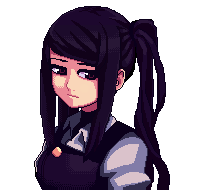

by SUKEBAN Games
Julianne Stingray
Julianne Natalie Stingray, or "Jill" as she is known, is the main protagonist and the bartender at VA-11 Hall-A.
Half-French. Avid smoker. Bisexual. Went to college. Drinks a lot of beer because of her implant that allows her to drink lots of beer and not get drunk. Has a cat named Fore, whom she talks to every time she's at home. She vaguely recalls having seen someone glitch out like how Anna Graem did in the past, but she doesn't remember when or where.
